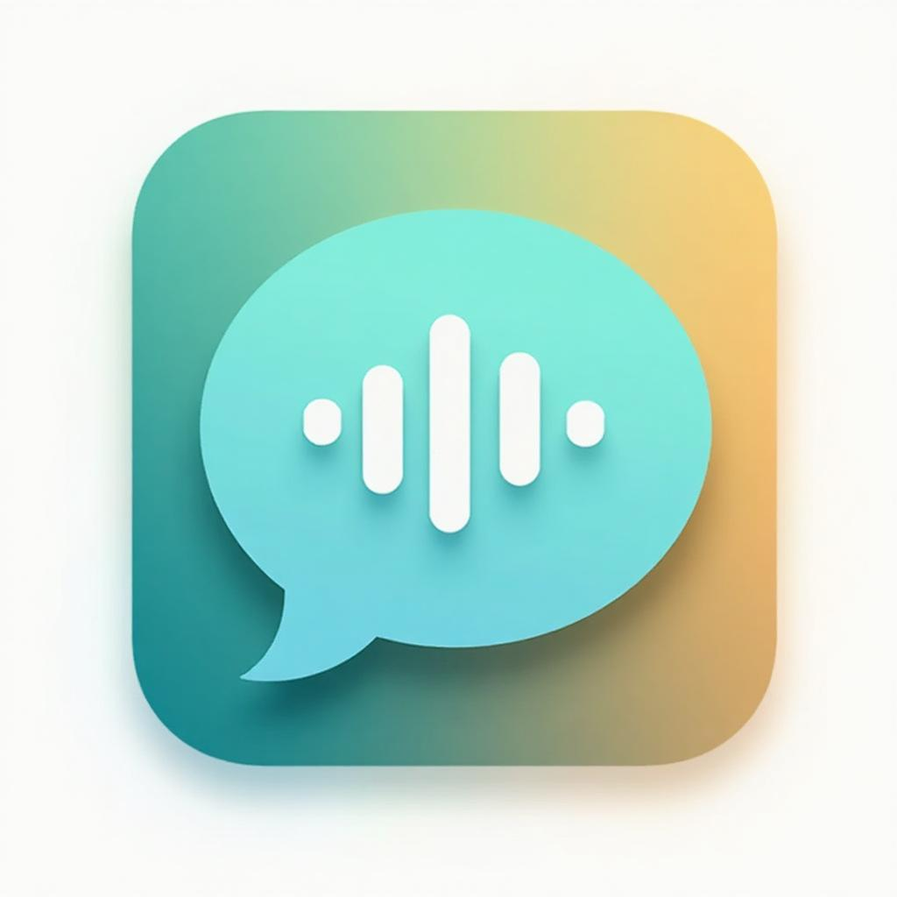

面向构音障碍患者的个性化语音辅助沟通系统
构音障碍（Dysarthria）是一种因神经肌肉控制异常导致的言语运动障碍，常见于脑瘫、中风、帕金森病、渐冻症（ALS）等患者群体。据世界卫生组织统计，全球约有1700万脑瘫患者，中国约有600万。这些患者中，约 60-80% 存在不同程度的构音障碍，导致他们的语音难以被普通人和通用语音识别系统理解。
"让每一个声音都被听见"
通过 AI 语音技术与个性化适配，让构音障碍患者用自己的声音自由沟通。
项目围绕以下三个核心理念展开：
| 维度 | 定位 |
|---|---|
| 目标用户 | 构音障碍患者（以脑瘫为主）、照护者、康复治疗师 |
| 核心场景 | 日常沟通表达（生理需求、社交寒暄、紧急求助等） |
| 产品形态 | 微信小程序（WebView 嵌入）+ 独立 Web 应用 |
| 技术差异点 | 个性化语音识别 + 声音克隆复述 + 无障碍优先设计 |
| 商业模式 | 机构付费 + 公益捐赠 + 政府采购（三条线并行） |
我们规划了从 Demo 到商业化的渐进式技术路径：
| 阶段 | 方案 | 准确率 | 成本 | 落地时间 |
|---|---|---|---|---|
| 当前阶段一 | 短语库 + ASR 模糊匹配 | ~40-60% | 零额外成本 | 已完成 |
| 中期阶段二 | Whisper + LoRA 个性化微调 | ~70-85% | ¥200-500/月 | 2-4 周 |
| 远期阶段三 | Step-Audio 开源大模型 SFT | ~85-95% | ¥2000+/月 | 3-6 个月 |
| 技术 | 选择 | 理由 |
|---|---|---|
| 前端框架 | React + Vite | 生态成熟、构建速度快、代码分割友好 |
| 样式方案 | Tailwind CSS | 原子化 CSS 适合无障碍主题定制、响应式开发高效 |
| 动画 | Framer Motion | 声明式动画 API、支持 reduced-motion 媒体查询 |
| 后端 | Supabase (Lovable Cloud) | 一站式 BaaS、免运维、内置认证与存储 |
| ASR | 阶跃星辰 Step ASR | 中文识别质量高、支持流式识别、API 成本可控 |
| TTS | 阶跃星辰 Step TTS | 支持声音克隆、中文自然度高、延迟低 |
| 分发 | 微信小程序 WebView | 国内用户触达最广、扫码即用、无需安装 |
用户按住录音按钮说话，系统通过 ASR 将语音转为文本，然后与预设短语库进行编辑距离模糊匹配，输出 Top-K 候选意图供用户选择。
用户确认意图后，系统使用 TTS 以清晰的语音复述该短语，帮助对方理解。更进一步，支持声音克隆——用患者本人的声音合成语音，保留声音身份认同。
预设 9 大类别、近 100 条日常沟通短语，涵盖生理需求、照护协助、疼痛不适、社交寒暄、紧急求助等场景。用户可自定义添加、编辑、删除短语，并支持 JSON 格式导入导出。
作为面向运动功能障碍用户的产品，无障碍设计是核心而非附加：
除核心辅助沟通功能外，系统同时承担构音障碍语音数据的大规模采集任务，为后续 LoRA 个性化微调提供训练数据基础：
深入调研构音障碍用户痛点，研读 44 篇相关学术论文（涵盖 Dysarthric ASR、LoRA/PEFT、数据增强、TTS/Voice Banking、BCI 等领域），确定技术路线和产品方向。
完成基础 UI 框架搭建、录音模块、ASR 识别集成（阶跃星辰 API）、短语库模糊匹配算法实现、TTS 语音合成功能。
实现完整无障碍体系（大触控目标、高对比度、键盘快捷键、屏幕阅读器适配）。集成阶跃星辰声音克隆 API，实现"用自己的声音说话"。
搭建 Supabase 后端（用户认证、录音存储、元数据管理）。设计数据采集标准（参考 MDSC 语料库规范），建立 dysarthria_recordings 数据表。
微信小程序 WebView 容器开发、跨平台兼容性调试。性能优化（代码分割、Lazy Loading、Legacy 浏览器兼容）。准备 ICP 备案和国内服务器部署。
端到端功能测试、用户体验走查。编写项目文档、数据标准规范、LoRA 微调部署指南。准备竞赛提交材料。
问题：通用 ASR 模型对构音障碍语音的字符错误率（CER）普遍超过 70%，部分重度患者甚至超过 100%。
解决：采用"ASR + 短语库模糊匹配"两级策略。即使 ASR 输出严重错误，通过编辑距离匹配仍可从有限短语库中找到最可能的意图。同时规划 LoRA 微调路径，用每人 50-100 条录音训练个性化适配层。
问题：脑瘫患者常伴有精细运动障碍，传统小按钮、复杂手势无法使用。
解决：所有可点击区域不小于 44×44px；录音按钮采用超大尺寸居中布局；支持键盘快捷键操作；提供高对比度和减弱动效模式。
问题：传统 TTS 使用预设声音，患者失去"声音身份"认同感。
解决：集成阶跃星辰声音克隆 API，只需 10 秒参考音频即可生成患者声音的 TTS 模型，让系统"用自己的声音"复述。
问题：小程序原生不支持复杂 Web 应用、WebView 内 API 权限受限。
解决：采用 WebView 容器方案，Web 应用部署在备案域名下，通过 JSSDK 桥接小程序原生能力。前端做 Legacy 浏览器兼容（@vitejs/plugin-legacy）。
问题：病理语音属于敏感健康数据，涉及患者隐私。
解决：Supabase RLS（行级安全策略）保护数据访问；本地优先存储减少网络传输；音频文件通过安全 Storage Bucket 管理；数据采集前知情同意。
项目以系统性文献综述为理论基础，深入研读了 44 篇领域相关论文，覆盖以下研究方向：
| 研究方向 | 论文数 | 关键发现 |
|---|---|---|
| 构音障碍语音识别 | 12 篇 | 说话人自适应可提升 20-30% 准确率；个性化模型效果显著优于通用模型 |
| LoRA / PEFT 微调 | 8 篇 | LoRA rank=8-16 即可获得接近全量微调的效果；训练参数量 <1% |
| 数据增强 | 6 篇 | Speed perturbation + SpecAugment 在低资源场景下可提升 15-25% 性能 |
| TTS / 语音银行 | 5 篇 | 声音银行技术可在患者语言能力退化前保存声音身份 |
| Step-Audio 端到端 | 3 篇 | 端到端架构避免级联误差，适合病理语音的联合优化 |
| 唤醒词检测 (MDSC) | 4 篇 | 三阶段渐进训练（SIC→SID→SDD），3 分钟注册数据即可显著提升 |
| 多模态 / BCI | 6 篇 | 质量评分过滤 + 课程学习策略适用于小模型高效训练 |
| 阶段 | 目标 | 关键任务 |
|---|---|---|
| 近期（1-2月） | LoRA 微调试点 | 采集 3-5 位真实用户数据 → Whisper-small + LoRA 训练 → 部署到 GPU 推理服务器 → 端到端验证 |
| 中期（3-6月） | 产品化与用户增长 | 联系 3-5 家康复机构试点 → 优化数据采集流程 → 多用户 LoRA 权重管理 → ICP 备案与正式上线 |
| 远期（6-12月） | 规模化部署 | Step-Audio 开源模型 SFT → 通用病理语音基座模型 → 机构合作推广 → 探索融资与商业化 |
共鸣项目（Project Resonance）立足于一个被长期忽视的真实社会需求——构音障碍患者的沟通困境。我们通过以下创新点尝试突破现有局限：
我们相信，AI 语音技术不应仅服务于主流用户群体。通过个性化适配和无障碍设计，技术可以成为弥合沟通鸿沟的桥梁，让每一个独特的声音都有机会被世界听见。